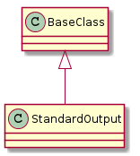
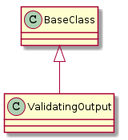

A module to hold a file-like object for output.

| StandardOutput(source, *args, **kwargs) | A class to act as a file (read-only) | ||
| StandardOutput.__iter__() | Implemented to make this class recognize the ‘in’ operator | ||
| StandardOutput.readline([timeout]) |
|
||
| StandardOutput.readlines() |
|
||
| StandardOutput.read() |
|

| ValidatingOutput(lines, validate, *args, ...) | A ValidatingOutput reads from an iterable and validates the lines. | ||
| ValidatingOutput.__iter__() |
|
||
| ValidatingOutput.readline([timeout]) |
|
||
| ValidatingOutput.readlines() |
|